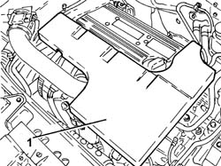
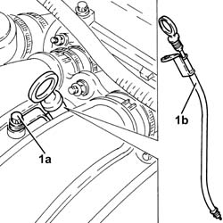
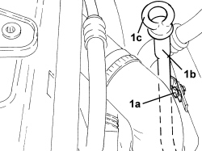
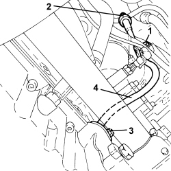
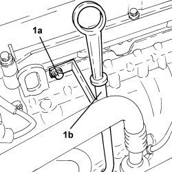

1084A16 OIL DIPSTICK PIPE - R.R
- Path
- Procedures > 10 ENGINE > 1084 ENGINE LUBRICATION > 1084A INDICATORS/CHECK DEVICES > 1084A16 OIL DIPSTICK PIPE - R.R
- Kind
- repair procedure (removal / refitting; the operation number is the code)
- Applies to
- all engines; all production periods
- Interactive page
- https://sloeber94.github.io/elrnDB-fCrm/en/#/194000382
Applies to: engines: 2.2; all production periods
 Removing
Removing
 Refitting
Refitting1. Remove the soundproof cover secured to the engine by three pins.

Applies to: engines: 2.2; all production periods
1. Undo retaining bolt (1a) and remove the engine oil dipstick tube assembly (1b) after disengaging from the electrical wiring.

Applies to: engines: 2.2; all production periods
Refitting
Removing- Replace the engine oil dipstick pipe back in its housing and fasten it with the bolt.
- Secure the electrical wiring to the fastenings on the engine oil dipstick tube.
Applies to: engines: 1.9 JTD 8v, 1.9 JTD 16v; all production periods
Removing
Refitting- Position the vehicle on a lift.
Op. 1016A10 SOUND-PROOFING COVER - R.R
1. Undo the bolt fixing the engine oil dipstick pipe to the engine crankcase sump.

Applies to: engines: 1.9 JTD 8v, 1.9 JTD 16v; all production periods
1. Undo the upper bolt (1a) and remove the engine oil dipstick tube (1b) complete with rod (1c).

Applies to: engines: 1.9 JTD 8v, 1.9 JTD 16v; all production periods
Refitting
Removing- Place the engine oil dipstick pipe complete with rod back in its housing and fasten it with the upper bolt.
- Tighten the bolt fixing the engine oil dipstick pipe to the engine crankcase sump.
Op. 1016A10 SOUND-PROOFING COVER - R.R
- Remove the vehicle from the lift.
Applies to: engines: 2.4 JTD 20v; all production periods
Removing
Refitting- Position the vehicle on a lift.
Op. 1016A10 SOUND-PROOFING COVER - R.R
Op. 7055B54 UNDER ENGINE PROTECTION/GUARD - R.R.
1. Undo the upper bolt fixing the engine oil dipstick guide pipe to the pressure pump mounting.
2. Withdraw and remove the engine oil dipstick and remove it.
3. Undo the bolt fixing the engine oil dipstick pipe to the engine crankcase sump.
4. Remove the engine oil dipstick tube.

Applies to: engines: 2.4 JTD 20v; all production periods
Refitting
Removing- Place the engine oil dipstick back in its housing.
- Tighten the bolt fixing the engine oil dipstick pipe to the engine crankcase sump.
- Place the engine oil dipstick back in its housing.
- Tighten the upper bolt fixing the engine oil dipstick guide pipe to the pressure pump mounting.
Op. 7055B54 UNDER ENGINE PROTECTION/GUARD - R.R.
Op. 1016A10 SOUND-PROOFING COVER - R.R
- Remove the vehicle from the lift.
Applies to: engines: 1.8; all production periods
Removing
Refitting1. Undo the bolt (1a) and remove the engine oil dipstick tube (1b).

Applies to: engines: 1.8; all production periods
Refitting
Removing- Place the engine oil dipstick pipe back in its housing and fasten it with the bolt.
Topics linked from this page (2)
Topics that link to this page (27)
- 1016C10 SINGLE CYLINDER HEAD - R.R. AND REPLACE GASKET
- 1020A20 CRANKCASE OIL SUMP - R.R CLEAN SURFACES FOR SEALANT APPLICATION
- 1020D10 FRONT CRANKSHAFT OIL SEAL COVER - R + R AND REPLACE SEALS WITH TIMING BELT REMOVED
- 1020D14 FRONT CRANKSHAFT OIL SEAL COVER - R.R AND REPLACE SEALS FOR VERSIONS WITH OIL PUMP ON CRANKSHAFT, TIMING SIDE
- 1020D18 FRONT CRANKSHAFT COVER OIL SEAL - R.R.
- 1028H20 PISTON WITH CONNECTING ROD - R.R
- 1032B10 TOOTHED TIMING BELT - R + R FOR TIMING ADJUSTMENT OR REPLACEMENT
- 1032C42 TIMING BELT TENSIONER SUPPORT - R.R
- 1036L10 CAMSHAFTS IN CAMSHAFT HOUSING - R.R. - INCLUDES CAMSHAFT HOUSING REPLACEMENT IF NECESSARY
- 1036L30 FRONT OIL SEAL FOR CAMSHAFT IN CAMSHAFT HOUSING - REPLACE
- 1060E10 DIESEL INJECTION PRESSURE PUMP - R.R.
- 1060E30 PRESSURE PUMP DRIVE PULLEY - R.R.
- 1060E40 PRESSURE PUMP SUPPORT - R.R.
- 1064A27 PIPE BETWEEN VACUUM RESERVOIR AND ACTUATOR CONTROL SOLENOID VALVE - R.R.
- 1072B10 INLET MANIFOLD - R + R AND REPLACE SEAL
- 1072C16 EXHAUST MANIFOLD WITH CATALYTIC CONVERTER - R.R.
- 1072C44 EXHAUST MANIFOLD HEAT SHIELD - R+R
- 1080B40 CATALYTIC PRE-CONVERTER - R.R
- 1080B62 CATALYTIC CONVERTER - R + R
- 1084A40 ENGINE OIL LEVEL SENSOR - R + R
- 1084B26 ENGINE OIL INTAKE DUCT - R.R
- 1084B34 CARTRIDGE ENGINE OIL FILTER SUPPORT - R + R
- 1084B36 ENGINE OIL FILTER MOUNTING AND HEAT EXCHANGER - R.R
- 1084B40 ENGINE OIL DELIVERY PIPE TO TURBOCHARGER - R + R
- 1084B42 ENGINE OIL RETURN PIPE FROM TURBO - R + R
- 1088D24 WATER PUMP RIGID COOLANT INLET PIPE - R.R.
- 3330D03 SERVO BRAKE / BRAKE PUMP ASSEMBLY - R.R. FOR RIGHT DRIVE VERSIONS